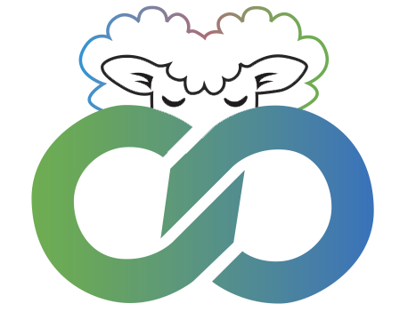

Společně v Jehnicích
Tým
Program 2026
Úspěchy
Zpravodaj
Tým
Program 2026
Úspěchy
Zpravodaj
Program 2026
Představujeme naše priority a plány pro nadcházející volební období
Infrastruktura
Zlepšení dopravní dostupnosti a parkování
Modernizace veřejného osvětlení
Údržba a oprava místních komunikací
Rozšíření pokrytí vysokorychlostním internetem
Služby pro občany
Rozšíření služeb obecního úřadu
Posílení bezpečnosti v obci
Podpora služeb pro rodiny s dětmi
Péče o seniory a sociálně potřebné
Životní prostředí
Výsadba stromů a údržba zeleně
Rozvoj třídění odpadu a kompostování
Podpora úsporných a ekologických řešení
Revitalizace veřejných prostranství
Komunita a kultura
Podpora spolkového života a tradičních akcí
Aktivity pro děti a mládež
Mezigenerační setkávání
Péče o místní památky a historii